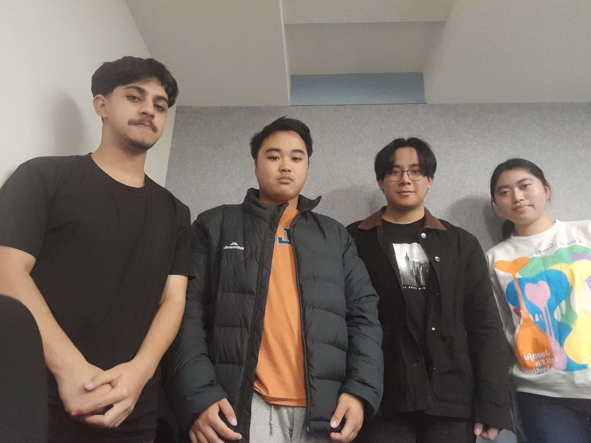

Our Group Name:
Computer-Warriaz
Group ID:
104349875
Our Tutor:
MD Kafil Uddin
Course:
Bachelors of Computer Science
Group Photo:
- 
Day/Period |
8:30-10:30 | 10:30-11:30 | 11:30-1:30 | 1:30-2:30 | 2:30-4:30 | |
| Monday | CIP LECTURE | |||||
| Tuesday | CS LAB | ITP LECTURE | ||||
| Wednesday | ||||||
| Thursday | TNE LAB | ITP LAB | CIP LAB | CIP WORKSHOP | ||
| Friday | TNE LECTURE | |||||
Send Us an Email
Arogya Badal
Hi there, my name is Arogya Badal! I'm from Nepal and I love playing the guitar. My favorite band is Tribal Rain, which is actually from Sikkim. As for my hometown, it's a small city located in the central part of Nepal. It's surrounded by hills and there's a river that flows through it. The people there are really friendly and hospitable, and there's always something to do, whether it's hiking in the hills or enjoying a cup of tea at a local cafe.
I also enjoy programming and have some experience in JavaScript and React.
When it comes to my favorite books, I really enjoy reading fiction and non-fiction. Some of my all-time favorites include "The Alchemist" by Paulo Coelho, "The God of Small Things" by Arundhati Roy, and "Sapiens" by Yuval Noah Harari. As for music, I'm a big fan of rock and indie music. I love listening to bands like Radiohead, Arctic Monkeys, and of course, Tribal Rain!
Kaitlyn
Hello, my name is Kaitlyn and I'm from Melbourne, Australia. I come from a Chinese background, specifically from Hong Kong. Melbourne is a vibrant city that has a lot to offer, from its diverse culture to its bustling arts and food scenes. I love exploring the city's outdoor spaces like the Royal Botanic Gardens and the Yarra River, as well as its famous coffee culture.
I enjoy reading books and listening to music, but I haven't specified any favorites. Being raised in a Chinese family, I have a particular interest in Chinese literature and music. Some of my favorite Chinese authors include Mo Yan, Yan Lianke, and Eileen Chang. I also appreciate traditional Chinese music, Cantonese pop, and western music.
Danny
Hi there! My name is Danny and I'm from Melbourne, Australia. I've lived here for most of my life and I absolutely love it. Melbourne is a vibrant and diverse city with a rich history and culture. It's known for its amazing coffee, street art, and music scene. There's always something new to discover here, whether it's a hidden laneway or a trendy new restaurant.
I'm really passionate about programming and gaming. I love learning how things work and creating new things. It's always been a fascination of mine, and I'm lucky enough to be working in this field now. In my free time, I also enjoy listening to EDM music. I find it really energizing and inspiring.
My family background is Vietnamese, and I have a strong connection to Vietnamese culture. I love the food, the music, and the traditions. It's important to me to stay connected to my roots, even as I explore new things in my life.
Darren
Hi there! My name is Darren, born in 2002, and I've lived in Melbourne for most of my life. I'm an indie music lover, and I also enjoy playing video games and exploring the field of data science. My family's background is from Malaysia, and I have a strong appreciation for their culture.
As for my group members, we all have different tastes when it comes to books and music. Some of our favorites include "The Catcher in the Rye" by J.D. Salinger, "To Kill a Mockingbird" by Harper Lee, and "The Great Gatsby" by F. Scott Fitzgerald. When it comes to music, we enjoy everything from indie and alternative to hip hop and electronic. Some of our favorite artists include Radiohead, Arcade Fire, Kendrick Lamar, and Daft Punk.